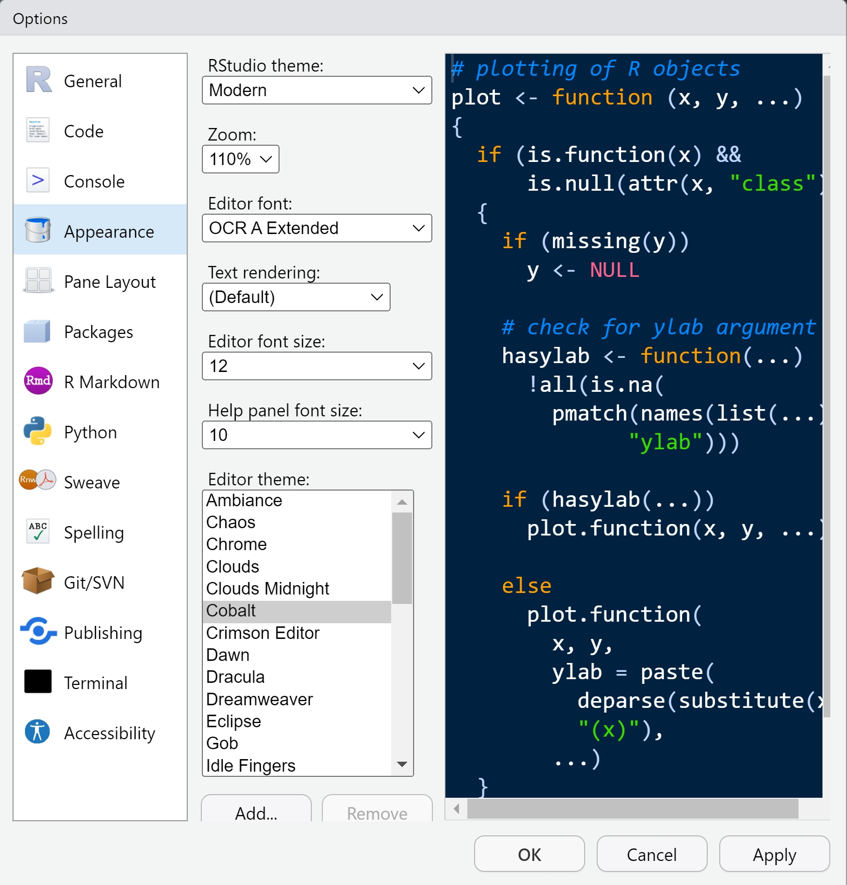

53 + 23 # [Ctrl + Enter]Special thanks to Dr. Timothy E. Moore for most contents of this tutorial!
Preparation
Installing R and RStudio
Following step 1 and 2 here to download them
Note
Recommended R version: 4.3.0+
R is a powerful tool for analyzing and visualizing data. Specifically, it is a language and environment for statistical computing and graphics. As an R user you will need to learn to understand the language R uses to execute commands. And that is what we will hopefully help you with today.
RStudio is an open source R integrated development environment for interfacing with R.It is useful for:
- Writing scripts for specific analyses
- Creating markdown documents
- Version control via GitHub
- Organizing and sharing analyses via projects
Checking whether RStudio is using the correct version or R
Tools -> Global Options… -> General
Configuring RStudio
Tools -> Global Options… -> Pane Layout
Tools -> Global Options… -> Appearance

Using R as a calculator
Let’s start programming by getting R to do some arithmetic for us. I am going to do this in the editor window.
Tip
Hovering over the code chunk and clicking Copy to Clipboard, you can copy the code and have a try yourself!
There are a few different ways to run commands or ‘chunks’ of code from the editor window, depending on the OS you are using.
Run and move cursor down:
- Click run (all systems)
Ctrl + Enter(Win, Linux)Cmd + Enter(Mac OS)Alt + Enter(Win, Linux)
Tip
You can run multiple lines of code at once. You can run lines without highlighting, code will run on line with cursor
Run and don’t move cursor:
Alt + Enter(Win, Linux)
So let’s start by running some code to do some addition:
Remember to actually run this we hit ctrl or cmd + enter, or click the run button.
The text after each line of code is called a “comment”. Anything that follows after the hash (or octothorpe) symbol # is ignored by R when it executes code.
You’ll see that the line we’ve just run pops up in the console, along with the output from the command we’ve just given R. If you run an incomplete command, R will wait for you to complete it:
1 + # [Ctrl + Enter]Note that the > in the console window is now a + indicating that R is waiting for the command to be completed. You can exit commands by pressing escape within the console window.
When using R as a calculator, the order of operations is the same as you would have learned back in school. From highest to lowest precedence:
- Parentheses: ( )
- Exponents: ^
- Divide: /
- Multiply: *
- Add: +
- Subtract: -
So for example we can try:
3 + 5 * 2[1] 13versus
(3 + 5) * 2[1] 16
Note
R will ignore spaces between + and - , etc.
Mathematical functions
R has many built in mathematical functions. To call a function, we simply type its name, followed by open and closing parentheses. For example:
log(1) # natural logarithm
log10(10) # base-10 logarithm
exp(0.5) # exponent
Note on functions
We have just used our first built-in R functions, i.e., log(), log10(), and exp(). One of the great benefits of R is the shear diversity of functions at our disposal. No matter how complex or simple the function, they operate in the same way:
- Call the name of the function, e.g.,
log - Provide required arguments in parentheses, e.g.,
log(1)
These mathematical functions are relatively simple and only have one or two arguments. For instance, the log() function take two arguments: x and base. So, when we call
log(1)[1] 0We are actually calling:
log(x = 1, base = exp(1))[1] 0Here, x represents the number (or numbers) we want to take the logarithm of, and base is the base to be used for the log, which by default is exp(1). Note that, with the base argument, we are calling a function within a function!
Tip
Forget arguments? Use the help document:
?logVariables and assignment
We can store values in variables using the assignment operator <-, which is the less than sign followed by a minus like this:
x <- 1/40
x[1] 0.025
Note
Will see that x has been loaded in to the environment.
Tip
Alt + - gives <- in Windows
Warning
You may see someone use = instead of <-:
x = 1/40
x[1] 0.025But it’s a bad habit! Don’t use = to assign a variable ever.
And we can now perform calculations using x in place of our original number. For example, take the natural log:
log(x)We can also reassign variables that we have created. Let make x have a value of 100:
x <- 100We can also update the assigned value by including the variable we want to update. E.g.:
x <- x + 1and even:
y <- x * 2Variable names can contain letters, numbers, underscores and periods. They cannot start with a number nor contain spaces at all. Different people use different conventions for long variable names, these include:
- periods.between.words
- underscores_between_words
- camelCaseToSeparateWords
Important
I prefer underscores_between_words. (reasons will be clear)
Which of the following are valid R variable names?
min_height
max.height
_age
.mass
MaxLength
min-length
2widths
celsius2kelvin
Answer
1, 2, 4, 5, 8
- You can’t start a variable name with an
_or a number. - “.mass” creates a variable, but it is a hidden variable
- R sees “min-length” as a mathematical operation, rather than a name
- But I almost only use 1 to save my sanity.
What will be the value of each variable (mass and age) after each statement in the following:
mass <- 47.5 age <- 122 mass <- mass * 2.3 age <- age – 20
Important
You can overwrite variables!
Vectorization
R is vectorized: variables and functions can have vectors as values. A vector in R describes a set of values in a certain order of the same data type. For example:
1:5 [1] 1 2 3 4 5Produces a vector of numbers. And we can perform mathematical functions on this vector:
2^(1:5)[1] 2 4 8 16 32Notice that what R has done here is raise 2 to the power of each number in the vector.
We can also perform arithmetic on multiple vectors, for example:
x <- 1:4
y <- 5:8
x + y[1] 6 8 10 12The vectorized nature of R is an incredibly useful feature that can often save you lots of time.
Brief note on data types
There are 4 main of data types:
double
integer
logical(
TRUEandFALSE)character
Some operations can only be performed on certain types of data. For example, mathematical functions typically need to be done one types double or integer. We can use the typeof function to identify a data type:
typeof(x)Or for a categorical vector:
typeof(c("red", "organge", "blue"))
Note
c() combines its arguments to form a vector.
Warning
If you combine data of different types in a vector, R will **coerce** them to be of the same type. It is important to keep words/characters and numbers separate!
Combining vectors into a dataframe
We can also combine vectors into a dataframe. Dataframes are extremely useful, and are typically how your data would be stored and worked with in R. Key to note is that each vector must be the same length.
cats <- data.frame(coat = c("calico", "black", "tabby"),
weight = c(2.1, 5.0, 3.2),
likes_string = c(1, 0, 1))
cats coat weight likes_string
1 calico 2.1 1
2 black 5.0 0
3 tabby 3.2 1Experiment
Except built-in functions, R support external packages. When downloading R, it ships with some packages. Look up the whole list by:
library() To download new packages, do
install.packages("name-of-the-package")To make a package at your disposal,
library(MASS)We will play with a data set called Boston in the MASS package. Use
?Bostondim(Boston) # dimension (506 rows and 14 columns)[1] 506 14head(Boston) # see the first 6 rows crim zn indus chas nox rm age dis rad tax ptratio black lstat
1 0.00632 18 2.31 0 0.538 6.575 65.2 4.0900 1 296 15.3 396.90 4.98
2 0.02731 0 7.07 0 0.469 6.421 78.9 4.9671 2 242 17.8 396.90 9.14
3 0.02729 0 7.07 0 0.469 7.185 61.1 4.9671 2 242 17.8 392.83 4.03
4 0.03237 0 2.18 0 0.458 6.998 45.8 6.0622 3 222 18.7 394.63 2.94
5 0.06905 0 2.18 0 0.458 7.147 54.2 6.0622 3 222 18.7 396.90 5.33
6 0.02985 0 2.18 0 0.458 6.430 58.7 6.0622 3 222 18.7 394.12 5.21
medv
1 24.0
2 21.6
3 34.7
4 33.4
5 36.2
6 28.7colnames(Boston) # column names [1] "crim" "zn" "indus" "chas" "nox" "rm" "age"
[8] "dis" "rad" "tax" "ptratio" "black" "lstat" "medv" boxplot(Boston$medv) # boxplot of median house price
boxplot(Boston$lstat) # percent of households with low socioeconomic status
cor(Boston$medv, Boston$lstat) # Pearson correlation[1] -0.7376627my_model <- lm(medv ~ lstat, data = Boston)
summary(my_model)
Call:
lm(formula = medv ~ lstat, data = Boston)
Residuals:
Min 1Q Median 3Q Max
-15.168 -3.990 -1.318 2.034 24.500
Coefficients:
Estimate Std. Error t value Pr(>|t|)
(Intercept) 34.55384 0.56263 61.41 <2e-16 ***
lstat -0.95005 0.03873 -24.53 <2e-16 ***
---
Signif. codes: 0 '***' 0.001 '**' 0.01 '*' 0.05 '.' 0.1 ' ' 1
Residual standard error: 6.216 on 504 degrees of freedom
Multiple R-squared: 0.5441, Adjusted R-squared: 0.5432
F-statistic: 601.6 on 1 and 504 DF, p-value: < 2.2e-16plot(my_model) # diagnostic plots


Min Lin - Intro to R Min Lin - Intro to R Min Lin - Intro to R Min Lin